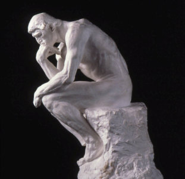

Philosophy often gets a bad wrap in common circles. Many people tend to dismiss philosophy as useless, or as irrelevant quibbling about what really is. It is often equated with groups like hippies, constantly high, never serious, and never practical. This is an unfair and shortsided perspective to hold on the topic. Philosophy is not merely two old men in a room thinking about metaphysics (although that certainly counts). Rather, philosophy is the love of knowledge, or the pursuit of wisdom. This pursuit extends into every part of reality.
Philosophy has many subsections and many individual areas of study. There are five primary fields of philosophy.
- Metaphysics, or questions about reality and existence itself. The most famous quote about metaphysics is Rene Descartes' "I think, therefore I am" ( or "cogito, ergo sum" in Latin), in which he proved that his mind must exist. This area of philosophy is what most often gets a bad wrap from outsiders. After all, it seems purely ridiculous to assume that we don't exist. As has been said, "Once you sweep everything off the table, it becomes difficult to put it back on." We shall leave metaphysics behind for the moment.
- Epistemology, or questions about knowledge. There are four primary positions on epistemology: rationalism, empiricism, relativism, and skepticism. Rationalism states that reason is the method through which knowledge can be gained. By contrast, empiricism states that knowledge can only be gained by experimentation and observation. The two butt heads frequently in their most extreme states, but some degree of synthesis is possible between them. Anyone may attempt to incorporate some degree of rationalism in their empiricism and visa versa. The final two positions, however, are more contentious. Skepticism is the epistemological claim that some or all knowledge is impossible to gain. Relativism is the claim that knowledge is subjective or relative, and changes from person to person or culture to culture.
- Ethics, or questions about how man should act. Inside of this category of ethics is morality as well, sometimes considered to be a synonym of ethics, while othertimes considered a subsection of it. This is the most contentious area of philosophy by far, among both philosophers and the average man. There are far more ethics and disputes of ethics here that shall be partially addressed elsewhere.
- Logic, or principles of reasoning, is one of the least contentious areas of study. Quite typically, only those who are concerned with metaphysics or certain parts of epistemology have disputes with this area, as the laws of logic are relatively universally accepted.
- Aesthetics, or questions about beauty, is, in my opinion, by far the most boring kind of philosophy. Most of this winds up in mostly subjective statements.